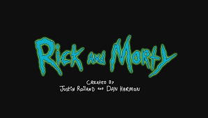

<ion-header [translucent]="true">
  <ion-toolbar>
    <ion-title>
      Blank
    </ion-title>
  </ion-toolbar>
</ion-header>

<ion-content  class="ion-padding ion-text-center">

  <div class="logo">
    
</div>
<ion-button color='dark' expand='block' routerLink = '/characters' >Start</ion-button>
</ion-content>
